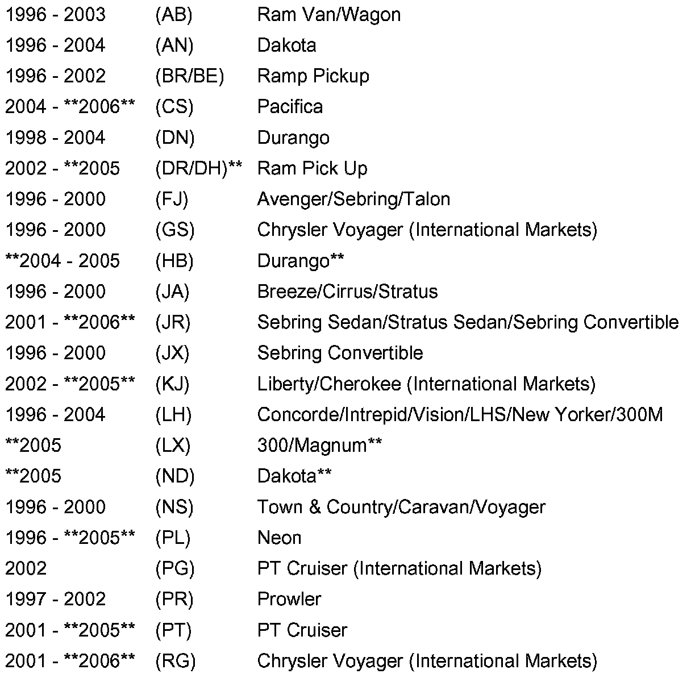
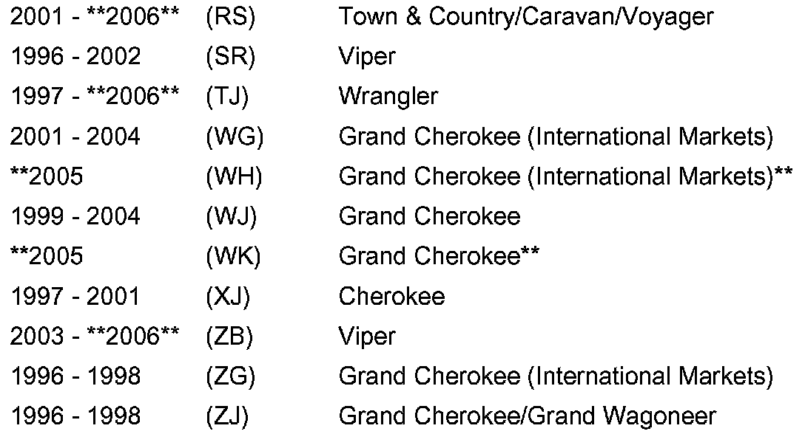
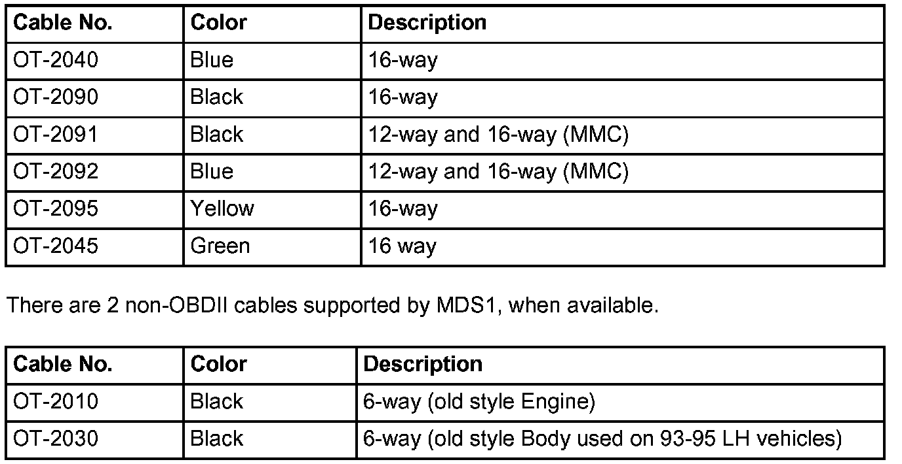
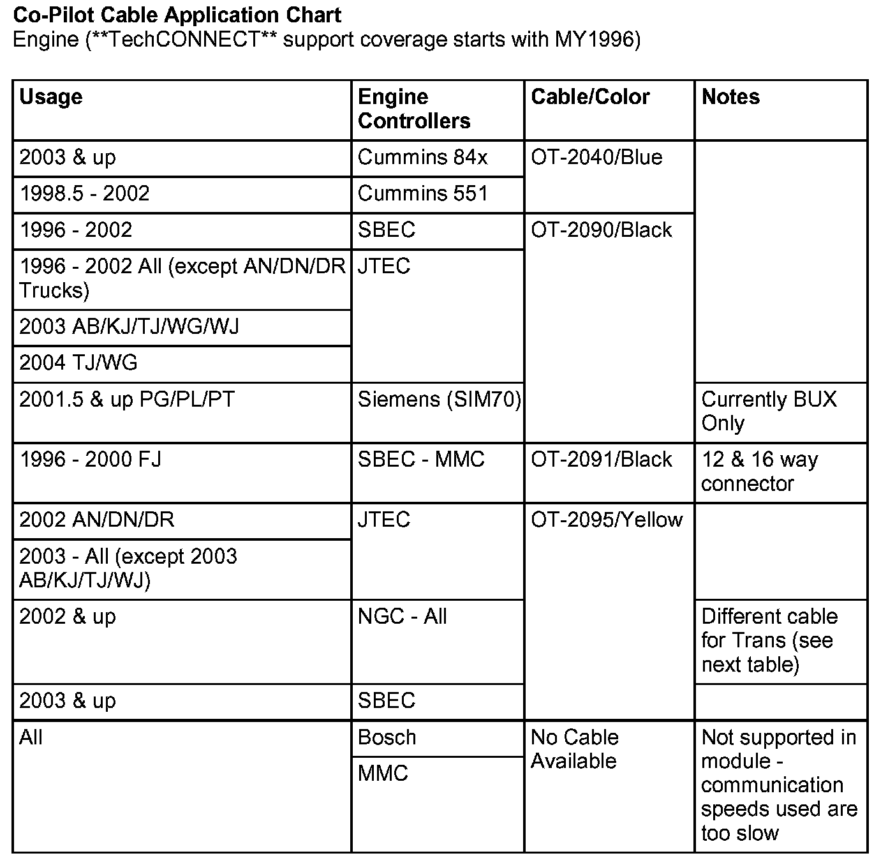
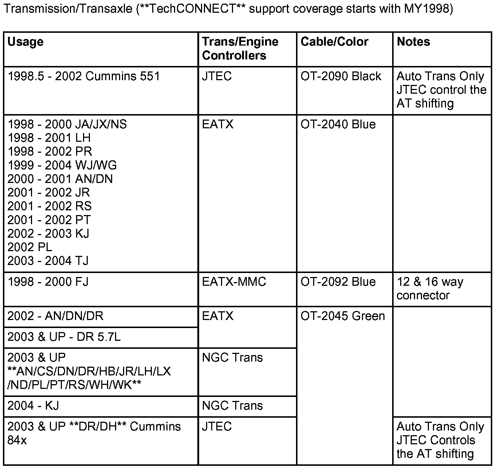

Engine Controls - Co-Pilot Support/Correct Cable Usage
NUMBER: 18-029-05GROUP: Vehicle Performance
DATE: June 30, 2005
THIS BULLETIN SUPERSEDES SERVICE BULLETIN 18-008-03, DATED MARCH 7, 2003, WHICH SHOULD BE REMOVED FROM YOUR FILES. ALL REVISIONS ARE HIGHLIGHTED WITH **ASTERISKS** AND INCLUDE ADDITIONAL MODELS AND YEARS, UPDATED CHARTS AND TEXT.
SUBJECT:
Co-Pilot Support and Correct Cable Usage


MODELS
DISCUSSION:
General Information
The dealership technician has a choice when it comes to making a data recording of a supported Powertrain Control Module (PCM) or Transmission Control Module (TCM). The data recording can be done using the DRBIII(R) and/or using a Co-Pilot. The Co-Pilot was released to provide a lower-cost option along with an element of simplicity that would allow a vehicle operator to capture intermittent problems to assist the dealer technician in identifying problems.
Whether a module can be data recorded effectively depends on a number of factors. The most important is communication speed between the tool and the module. DaimlerChrysler vehicles using modules that support Serial Communication Interface (SCI), currently our fastest serial communication, on PCMs or TCMs have the communication speeds to make recordings viable. To be viable, the module communication speed needs to be 62.5 Kbps (kilobytes per second) or higher. Modules that use slower communication protocols such as CCD, PCI, J1850, and ISO-9141 are too slow to be effective for making data recordings. DaimlerChrysler does not provide data recording support for these communication protocols.
The modules currently supported for data recordings are the PCM and TCM.
Co-Pilot
The current Co-Pilot recording tool has been around almost as long as the DRBIII(R). Co-Pilot only supports communication connections to a single pin. This tool must connect to the proper pin in the Data Link Connector (DLC) to produce data recordings. This limitation requires multiple cables (described later) to connect to the desired pin for successful recordings to occur.
DRBIII(R)
This tool can connect to the various pins in the DLC using the CH7000/7001 cable for domestic vehicles. For MMC vehicles with domestic powertrain, use the CH7010, MMC double-headed (16 & 12 way support cable). The DRBIII(R) can move its reporting pin connection to different pins at the DLC because it can multiplex (mux) the communication wires for the various controllers to establish a connection link.
MODULE SUPPORT:
Powertrain Control Modules
^ Single Board Engine Controller (SBEC) - all versions
^ Jeep Truck Engine Controller (JTEC) - all versions
^ Next Generation Controller (NGC) - support added as new versions are released.
^ Siemens70 (SIM70) - all versions (used on 1.6L engines for various international markets).
NOTE:
THE NGC IS REPLACING SBEC AND JTEC CONTROLLERS. ADDITIONALLY THE NGC CONTROLLER MAY ALSO HAVE THE TCM FUNCTIONALITY DEPENDING ON THE VEHICLE CONFIGURATION.
Diesel Engine Controllers (ECM)
Cummins 84x series - refers to various models of the new ECM used on the 2003 and up Cummins such as the 845 and 848 models used on 5.9L Turbo Diesel (TD) engines in Dodge Trucks. Data recorder support is being added.
Bosch - The diesel controller currently supplied does not support communication speeds fast enough for data recording.
Transmission Control Module
^ Electronic Automatic Transmission Modules (EATX) - all versions. Data recorder support for these modules start with the 1998 model year.
^ JTEC - When coupled with an RE automatic transmission in trucks, provides the dual function of performing PCM as well as Transmission (TCM) control. Minimally provides shifting control on automatic transmissions with a Cummins diesel engine controller.
^ NGC - will at times also have the EATX software for the automatic transmission/transaxle on the same controller. When recording using Co-Pilot it requires a different cable from the engine side.
NOTE:
CO-PILOT SUPPORT IS NOT AVAILABLE FOR THE 2002 LH AND 2002.5 DN NGC TRANSMISSION. DRBIII(R) DATA RECORDER MUST BE USED FOR THESE VEHICLES.
Not Supported are:
^ Bosch ECM - The diesel controller currently supplied does not support communication speeds fast enough for data recording.
^ Aisen - Warner TCM - This module does not support SCI so it cannot be data recorded. This module is used on AW4 automatic transmissions on various Jeep models.
^ EGS52 - This module does not support SCI so it cannot be data recorded. The module is produced by Siemens and used in conjunction with the W4J500 transmission.
^ MMC - This module uses ISO-9141 communication which is too slow to provide accurate recordings.
CABLES:
Successful Co-Pilot usage requires selecting the correct cable
Eight (8) Co-Pilot cables have been released. The Co-Pilot tool can only record data using SCI lines for communication. The Co-Pilot tool cannot multiplex, as the DRBIII(R) does to different circuits in the J1962 connector. As a consequence, anytime the wiring of the [1][2]diagnostic connector pin-outs change or new module support is added, this will in turn, often require a different Co-Pilot cable.
NOTE:
CHANGES TO CO-PILOT SOFTWARE ARE OFTEN NOT BACKWARDS COMPATIBLE. IF NEW CO-PILOT SOFTWARE IS RELEASED, ANY RECORDINGS TAKEN USING THE PREVIOUS SOFTWARE SHOULD NOT BE UPLOADED TO THE **TeChCONNECT** FOR VIEWING. PROBLEMS WITH INVALID DATA BEING DISPLAYED ON THE **TeChCONNECT** MAY OCCUR. ALWAYS PERFORM A RECORDING USING THE NEWEST CO-PILOT SOFTWARE AVAILABLE ON THE **TeChCONNECT**.

Co-Pilot is an optional diagnostic tool for the dealership or workshop. Because of this, please review the cables shown listed and the appropriate application or usage chart shown.
NOTE:
USING THE WRONG CABLE WILL PREVENT YOU FROM GETTING RECORDINGS!
NOTE:
IF YOU NEED ONE OF THE CABLES LISTED, CONTACT TEAM PSE AT 1-800-223-5623.
There are 6 OBDII (J1962) compliant vehicle cables used with **TechCONNECT**.
NOTE:
WHEN USING A DRBIII(R) FOR DATA RECORDINGS INSTEAD OF THE CO-PILOT, NO SPECIAL CABLES ARE NEEDED SINCE THE DRBIII(R) CAN MULTIPLEX TO THE CORRECT PINS ON THE DLC. THE PROCESS FOR DATA RECORDING WITH THE DRBIII(R) IS VERY SIMILAR TO THAT OF RECORDING WITH A CO-PILOT.
Non-supported Module List
^ Bosch (Diesel/Trans)
^ Siemens EGS52 (Trans)
^ MMC (all)
^ Aisen-Warner AW4 (Trans)
NOTE:
THESE MODULES ARE NOT SUPPORTED BECAUSE THE COMMUNICATION SPEEDS AVAILABLE ARE TOO SLOW FOR ACCURATE RECORDINGS.


Co-Pilot Cable Application Charts shown.
NOTE:
CO-PILOT SUPPORT IS NOT AVAILABLE FOR THE 2002 LH AND 2002.5 DN NGC TRANS. DRBIII(R) DATA RECORDER MUST BE USED FOR THESE VEHICLES.
POLICY:
Information Only.
Disclaimer:
This bulletin is supplied as technical information only and is not an authorization for repair.